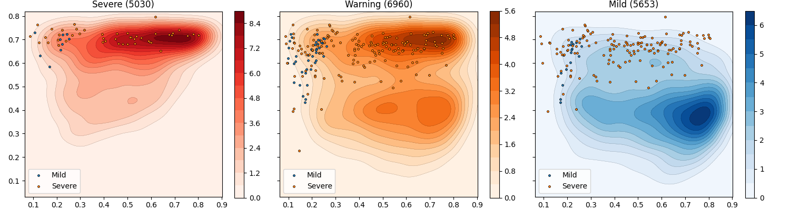

Note
Click here to download the full example code
Kde¶
Out:
Dtypes:
Unnamed: 0 Int64
study_no string
date datetime64...
abdominal_pain boolean
abdominal_tenderness boolean
...
severe_bleed boolean
severe_organ boolean
severe boolean
warning boolean
mild boolean
Length: 428, dtype: object
Data Full:
Unnamed: 0 study_no date abdominal_pain abdominal_tenderness abscess age aids alt ... rur_urb liver_abnormal kidney_abnormal severe_leak severe_bleed severe_organ severe warning mild
392 392 01nva-003-... 2020-07-06 True True <NA> 20.0 False 121.0 ... <NA> False False True False True True True False
393 393 01nva-003-... 2020-07-07 True <NA> False 20.0 <NA> <NA> ... <NA> False <NA> True False False True True False
394 394 01nva-003-... 2020-07-08 True <NA> <NA> 20.0 <NA> <NA> ... <NA> False <NA> True False False True True False
395 395 01nva-003-... 2020-07-09 True <NA> <NA> 20.0 <NA> <NA> ... <NA> False <NA> True False False True True False
409 409 01nva-003-... 2020-07-14 True False <NA> 16.0 <NA> 62.0 ... <NA> False <NA> False False True True True False
... ... ... ... ... ... ... ... ... ... ... ... ... ... ... ... ... ... ... ...
124836 33914 md-994 2003-07-21 False False <NA> 13.0 <NA> <NA> ... Urban False <NA> False False True True False False
124846 33924 md-995 2003-07-22 False False <NA> 9.0 <NA> <NA> ... <NA> False <NA> False False True True False False
124857 33935 md-996 2003-07-22 False False <NA> 10.0 <NA> <NA> ... Urban False <NA> False False True True True False
124877 33955 md-998 2003-07-23 False False <NA> 13.0 <NA> <NA> ... <NA> False <NA> False False True True True False
124888 33966 md-999 2003-07-23 False False <NA> 15.0 <NA> <NA> ... Urban False <NA> False False True True True False
[19968 rows x 428 columns]
Data Agg:
dsource age weight plt haematocrit_percent body_temperature gender date shock severe warning mild
study_no
01nva-003-2005 01nva 20.0 74.0 6.0 54.0 37.1625 1.0 2020-07-09 <NA> True True False
01nva-003-2008 01nva 16.0 72.0 8.0 54.0 37.075 1.0 2020-07-17 True True True False
01nva-003-2009 01nva 17.0 44.0 8.0 47.3333 37.0 0.0 2020-07-30 True True True False
01nva-003-2012 01nva 17.0 48.0 9.0 49.15 37.1875 0.0 2020-08-15 True True True False
01nva-003-2013 01nva 20.0 62.0 18.5 43.7 37.34 1.0 2020-08-19 True True True False
... ... ... ... ... ... ... ... ... ... ... ... ...
md-994 md 13.0 53.0 88.0 42.0 40.0 0.0 2003-08-27 False True False True
md-995 md 9.0 27.5 132.0 37.8 39.0 0.0 2003-08-27 False True False True
md-996 md 10.0 33.0 75.0 43.0 39.9 0.0 2003-07-24 False True True False
md-998 md 13.0 44.0 94.0 41.5 38.5 1.0 2003-08-29 False True True False
md-999 md 15.0 49.0 56.0 40.5 38.5 0.0 2003-08-29 False True True False
[13056 rows x 12 columns]
severe 5030
warning 6960
mild 5653
dtype: int64
Data 01NVA:
dsource age weight plt haematocrit_percent body_temperature gender date shock severe warning mild
study_no
01nva-003-2005 01nva 20.0 74.0 6.0 54.0 37.1625 1.0 2020-07-09 <NA> True True False
01nva-003-2008 01nva 16.0 72.0 8.0 54.0 37.075 1.0 2020-07-17 True True True False
01nva-003-2009 01nva 17.0 44.0 8.0 47.3333 37.0 0.0 2020-07-30 True True True False
01nva-003-2012 01nva 17.0 48.0 9.0 49.15 37.1875 0.0 2020-08-15 True True True False
01nva-003-2013 01nva 20.0 62.0 18.5 43.7 37.34 1.0 2020-08-19 True True True False
01nva-003-2024 01nva 16.0 114.0 9.0 49.1 37.1167 1.0 2020-10-09 True True True False
01nva-003-2025 01nva 20.0 47.0 14.0 43.1 37.5 0.0 2020-10-28 <NA> True True False
01nva-003-2028 01nva 18.0 82.0 18.0 42.9714 37.15 0.0 2020-11-07 True True True False
01nva-003-2033 01nva 17.0 50.0 19.0 46.5333 37.0333 0.0 2021-01-14 True True True False
01nva-003-2108 01nva 17.0 62.0 12.0 43.0 37.2333 0.0 2020-10-11 True True True False
01nva-003-2110 01nva 17.0 49.0 8.0 53.4 37.22 1.0 2020-11-08 True True True False
01nva-003-2151 01nva 20.0 75.0 36.0 52.0 37.8778 1.0 2020-06-20 <NA> True False True
01nva-003-2155 01nva 20.0 39.0 31.0 46.5 37.34 0.0 2020-06-26 <NA> True True False
01nva-003-2163 01nva 20.0 45.0 116.0 41.1 37.7208 0.0 2020-07-25 <NA> True False True
01nva-003-2164 01nva 19.0 47.0 17.0 44.7 37.7532 0.0 2020-07-27 <NA> True False True
01nva-003-2168 01nva 16.0 62.0 20.0 42.6 37.0944 0.0 2020-08-16 <NA> True False True
01nva-003-2171 01nva 17.0 58.0 26.0 45.9 37.225 0.0 2020-08-22 <NA> True False True
01nva-003-2174 01nva 19.0 68.0 78.0 43.6 37.5729 0.0 2020-09-07 <NA> True True False
01nva-003-2175 01nva 16.0 61.0 36.5 41.8 37.25 1.0 2020-09-08 <NA> True True False
01nva-003-2192 01nva 16.0 53.0 29.0 47.1 37.7792 0.0 2020-12-26 <NA> True False True
01nva-003-2201 01nva 9.0 39.0 33.0 45.6 37.1611 1.0 2020-06-07 True True True False
01nva-003-2202 01nva 13.0 73.0 6.0 46.2333 37.2875 0.0 2020-06-19 True True True False
01nva-003-2203 01nva 10.0 23.8 33.0 47.1333 37.2708 0.0 2020-06-19 True True True False
01nva-003-2204 01nva 13.0 78.0 19.0 46.8333 37.2333 1.0 2020-06-27 True True True False
01nva-003-2205 01nva 13.0 33.0 9.0 40.9 37.205 0.0 2020-07-05 True True False False
01nva-003-2206 01nva 12.0 40.0 14.0 46.9429 37.45 1.0 2020-07-11 True True True False
01nva-003-2208 01nva 12.0 47.0 58.0 52.8667 37.2417 1.0 2020-07-22 True True True False
01nva-003-2209 01nva 10.0 31.0 30.5 35.3 36.9611 0.0 2020-08-02 True True True False
01nva-003-2210 01nva 10.0 50.0 11.5 41.86 37.25 1.0 2020-08-06 True True True False
01nva-003-2211 01nva 9.0 22.0 30.0 51.1 37.075 0.0 2020-08-09 <NA> False True False
01nva-003-2212 01nva 11.0 47.7 13.5 40.955 37.3 0.0 2020-08-21 True True True False
01nva-003-2213 01nva 11.0 56.0 16.0 46.42 37.2542 1.0 2020-08-25 True True True False
01nva-003-2214 01nva 12.0 30.0 39.0 46.35 37.325 1.0 2020-08-27 True True True False
01nva-003-2216 01nva 14.0 44.0 22.0 48.2 37.205 0.0 2020-09-11 <NA> True True False
01nva-003-2217 01nva 14.0 45.0 10.0 42.0 37.33 0.0 2020-09-13 <NA> True True False
01nva-003-2218 01nva 11.0 28.0 29.0 47.6 37.2556 0.0 2020-09-16 True True True False
01nva-003-2219 01nva 12.0 38.3 19.0 44.4 37.2 1.0 2020-09-20 <NA> False True False
01nva-003-2220 01nva 15.0 66.4 10.0 53.2 37.0833 1.0 2020-09-27 <NA> True True True
01nva-003-2221 01nva 12.0 43.7 27.0 51.1 37.2833 0.0 2020-09-30 <NA> True True False
01nva-003-2222 01nva 8.0 40.7 23.0 67.05 37.1733 1.0 2020-10-05 True True True False
01nva-003-2223 01nva 6.0 20.0 18.0 45.7 37.0875 0.0 2020-10-11 <NA> False True False
01nva-003-2224 01nva 14.0 83.0 26.0 49.8 37.4167 1.0 2020-10-10 <NA> False True True
01nva-003-2225 01nva 11.0 48.0 22.0 43.3 37.4083 0.0 2020-10-12 True True True False
01nva-003-2226 01nva 12.0 25.4 46.0 43.25 37.0833 1.0 2020-10-18 <NA> False True False
01nva-003-2227 01nva 12.0 45.0 24.0 46.2 37.4 1.0 2020-10-26 <NA> True True False
01nva-003-2228 01nva 8.0 32.3 22.0 47.65 37.3 0.0 2020-10-25 True True True False
01nva-003-2229 01nva 11.0 38.0 38.0 44.4 37.25 0.0 2020-11-04 <NA> False True False
01nva-003-2230 01nva 10.0 43.8 24.0 47.0 37.4 1.0 2020-11-25 <NA> False True False
01nva-003-2231 01nva 9.0 42.2 21.0 44.9 37.2083 1.0 2020-12-05 <NA> True True False
01nva-003-2232 01nva 9.0 28.0 18.0 46.7 37.1875 1.0 2020-12-19 True True True False
01nva-003-2233 01nva 6.0 22.0 37.0 51.3 37.25 1.0 2020-12-30 <NA> True True False
01nva-003-2234 01nva 13.0 61.0 17.5 52.15 37.375 1.0 2021-01-08 <NA> True True False
01nva-003-2235 01nva 8.0 21.0 18.0 43.1 37.3333 0.0 2021-01-17 <NA> False True False
01nva-003-2236 01nva 13.0 34.0 17.5 42.15 37.5 0.0 2021-01-19 <NA> False True False
Model:
Autoencoder(
(encoder): Sequential(
(0): Linear(in_features=5, out_features=3, bias=True)
(1): Sigmoid()
(2): Linear(in_features=3, out_features=2, bias=True)
(3): Sigmoid()
)
(decoder): Sequential(
(0): Linear(in_features=2, out_features=3, bias=True)
(1): Sigmoid()
(2): Linear(in_features=3, out_features=5, bias=True)
(3): Sigmoid()
)
)
Scaler:
MinMaxScaler()
Data:
dsource age weight plt haematocrit_percent body_temperature gender date shock severe warning mild x y
study_no
01nva-003-2005 01nva 20.0 74.0 6.0 54.0 37.1625 1.0 2020-07-09 <NA> True True False 0.1189 0.7643
01nva-003-2008 01nva 16.0 72.0 8.0 54.0 37.075 1.0 2020-07-17 True True True False 0.1792 0.7462
01nva-003-2009 01nva 17.0 44.0 8.0 47.3333 37.0 0.0 2020-07-30 True True True False 0.3161 0.7418
01nva-003-2012 01nva 17.0 48.0 9.0 49.15 37.1875 0.0 2020-08-15 True True True False 0.2832 0.7452
01nva-003-2013 01nva 20.0 62.0 18.5 43.7 37.34 1.0 2020-08-19 True True True False 0.1512 0.7097
... ... ... ... ... ... ... ... ... ... ... ... ... ... ...
md-994 md 13.0 53.0 88.0 42.0 40.0 0.0 2003-08-27 False True False True 0.2457 0.5897
md-995 md 9.0 27.5 132.0 37.8 39.0 0.0 2003-08-27 False True False True 0.5306 0.5359
md-996 md 10.0 33.0 75.0 43.0 39.9 0.0 2003-07-24 False True True False 0.4926 0.6364
md-998 md 13.0 44.0 94.0 41.5 38.5 1.0 2003-08-29 False True True False 0.3235 0.5861
md-999 md 15.0 49.0 56.0 40.5 38.5 0.0 2003-08-29 False True True False 0.2697 0.6346
[13056 rows x 14 columns]
6 7 8 9 10 11 12 13 14 15 16 17 18 19 20 21 22 23 24 25 26 27 28 29 30 31 32 33 34 35 36 37 38 39 40 41 42 43 44 45 46 47 48 49 50 51 52 53 54 55 56 57 58 59 60 61 62 63 64 65 66 67 68 69 70 71 72 73 74 75 76 77 78 79 80 81 82 83 84 85 86 87 88 89 90 91 92 93 94 95 96 97 98 99 100 101 102 103 104 105 106 107 108 109 110 111 112 113 114 115 116 117 118 119 120 121 122 123 124 125 126 127 128 129 130 131 132 133 134 135 136 137 138 139 140 141 142 143 144 145 146 147 148 149 150 151 152 153 154 155 156 157 158 159 160 161 162 163 164 165 166 167 168 169 170 171 172 173 174 175 176 177 178 179 180 181 182 183 184 185 186 187 188 189 190 191 192 193 194 195 196 197 198 199 200 201 202 203 204 205 206 207 208 209 210 211 212 213 214 215 216 217 218 219 220 221 222 223 224 225 226 227 228 229 230 231 232 233 234 235 236 237 238 239 240 241 242 243 244 245 246 247 248 249 250 251 252 253 254 255 256 257 258 259 260 261 262 263 264 265 266 267 268 269 270 271 272 273 274 275 276 277 278 279 280 281 282 283 284 285 286 287 288 289 290 291 292 293 294 295 296 297 298 299 300 301 302 303 304 305 306 307 308 309 310 311 312 313 314 315 316 317 318 319 320 321 322 323 324 325 326 327 328 329 330 331 332 333 334 335 336 337 338 339 340 341 342 343 344 345 346 347 | # Library
import pickle
import pandas as pd
import numpy as np
import matplotlib as mpl
# Specific
from torch.utils.data import DataLoader
from sklearn.preprocessing import MinMaxScaler
from sklearn.neighbors import KDTree
from tableone import TableOne
# Specific
from pkgname.core.AE.autoencoder import get_device, set_seed
from pkgname.utils.data_loader import load_dengue, IQR_rule
from pkgname.utils.plot_utils import format_table_bootstrap
from definitions import ROOT_DIR
# Local (also configures mpl and pd)
import _utils
# ------------------------------
# Constants
# ------------------------------
# Load constants
features = _utils.features
others = _utils.others
mappings = _utils.mappings
aggregation = _utils.aggregation
cmaps = _utils.cmaps
outcomes = [
"severe",
"warning",
"mild",
]
# Ensure all outcomes are in aggregation
for c in outcomes:
if c not in aggregation:
print("Adding... %23s | max" % c)
aggregation[c] = 'max'
# ------------------------------
# Load data
# ------------------------------
# Load data
data = _utils.load_data()
# Liver abnormal
data['liver_abnormal'] = \
data.liver_acute | \
data.liver_involved | \
data.liver_failure | \
data.liver_severe | \
data.jaundice
# Kidney abnormal
data['kidney_abnormal'] = \
data.skidney
# Create features
data['severe_leak'] = \
data.ascites | \
data.overload | \
data.oedema_pulmonary | \
data.respiratory_distress | \
data.oedema | \
data.pleural_effusion | \
data.effusion
# Bleeding
data['severe_bleed'] = \
data.bleeding_gi | \
data.bleeding_urine # useless
# Organ impairment
data['severe_organ'] = \
data.cns_abnormal | \
data.neurology.astype(bool) | \
data.liver_abnormal | \
data.kidney_abnormal | \
(data.ast.fillna(0) >= 1000) | \
(data.alt.fillna(0) >= 1000)
# Category: severe
data['severe'] = \
data.severe_leak | \
data.severe_bleed | \
data.severe_organ | \
data.shock
# Category: warning WHO
data['warning'] = \
data.abdominal_pain | \
data.abdominal_tenderness | \
data.vomiting | \
data.ascites | \
data.pleural_effusion | \
data.bleeding_mucosal | \
data.restlessness | \
data.lethargy | \
(data.liver_palpation_size.fillna(0) > 2)
# Category: mild
data['mild'] = ~(data.severe | data.warning)
# Raw after very basic cleaning
raw = data.copy(deep=True)
# Filter data (age, iqr, ...)
# .. note: Although previously we were filtering only
# for adults, there is an interesting patient
# (01nva-003-2164) who is 19 years old.
#
# .. note: Platelets has a very clear outliers 50000
# which influences the quartile selection
# in the quartile range rule (IQR)
data = data[data.age.between(0.0, 20.0)]
data = data[data.plt < 50000]
#data = data.fillna('ffill') # no need if keeping max/min
#data = data.fillna('bfill') # no need if keeping max/min
# Filter outliers
data = IQR_rule(data, [
'plt',
#'haematocrit_percent',
#'body_temperature'
])
# Convert dtypes
data = data.convert_dtypes()
# Rename
# .. note: Done after convert_dtypes so that
# it remains 0 or 1, otherwise it will
# be transformed to boolean feature.
# (its ok too).
data = data.replace(mappings)
# Show dtypes
print("\nDtypes:")
print(data.dtypes)
# ------------------------------
# Aggregate to worse combo
# ------------------------------
# Get worst state for patient
data_w = data.copy(deep=True) \
.groupby(by="study_no", dropna=False) \
.agg(aggregation) \
.dropna(how='any', subset=features)
# Get full data
data_f = data.copy(deep=True) \
.dropna(how='any', subset=features)
# Show data
print("\nData Full:")
print(data_f)
print("\nData Agg:")
print(data_w)
print(data_w[outcomes].sum())
print("\nData 01NVA:")
print(data_w[data_w.dsource == '01nva'])
# ------------------------------
# Load Model
# ------------------------------
# Load model
model = _utils.load_model()
# Show
print("\nModel:")
print(model)
# ------------------------------
# Projections
# ------------------------------
# .. note: The scaling method should have also
# been saved when training the model.
# Scaler
scaler = MinMaxScaler().fit(data_f[features])
# Include encoded in aggregated
data_w[['x', 'y']] = model.encode_inputs( \
DataLoader(scaler.transform(data_w[features]),
16, shuffle=False))
# Include encoded in full (filtered)
data_f[['x', 'y']] = model.encode_inputs( \
DataLoader(scaler.transform(data_f[features]),
16, shuffle=False))
# Show
print("\nScaler:")
print(scaler)
print("\nData:")
print(data_w)
# ------------------------------
# Visualization
# ------------------------------
# Libraries
import matplotlib.pyplot as plt
# Specific
from _utils import kde_mpl_plot
from _utils import kde_mpl_compute
from _utils import kde_mpl
# ------------------------------------
# Show interesting outcomes (contours)
# ------------------------------------
# Figure with kdes
f1, axes1 = plt.subplots(1, 3, figsize=(15, 4),
sharex=True, sharey=True)
# Loop
for i, c in enumerate(outcomes):
# Select dataset
aux = data_w[data_w[c] == 1]
# Plot kde
kde_mpl(aux.x, aux.y, ax=axes1.flat[i],
contour=True, cmap=cmaps.get(c, 'Reds'),
xlim=(data_w.x.min(), data_w.x.max()),
ylim=(data_w.y.min(), data_w.y.max()))
# Configure
axes1.flat[i].set(aspect='equal',
title='%s (%s)' % (c.title(), aux.shape[0]))
# -------------------------------------
# Plot aggregated categories
# -------------------------------------
# Copy 01nva data
aux = data_w[data_w.dsource == '01nva']
aux['study_no'] = aux.index \
.to_series().str.split('-').str[-1]
# Create basic rule
criteria = list(zip(*[
(aux.study_no.between('2001', '2034'), 'Severe'),
(aux.study_no.between('2101', '2112'), 'Severe'),
(aux.study_no.between('2201', '2236'), 'Severe'),
(aux.study_no.between('2151', '2196'), 'Mild'),
(aux.study_no == '2162', 'Unique'),
]))
# Apply rule (default False)
aux.loc[:, 'category'] = np.select(criteria[0],
criteria[1],
'None')
# Display
for i,g in aux.groupby('category'):
axes1.flat[0].scatter(g.x, g.y,
s=8, linewidth=0.5, edgecolor='k',
label=i)
axes1.flat[0].legend()
# -------------------------------------
# Plot daily categories
# -------------------------------------
# Copy 01nva data
aux = data_f[data_f.dsource == '01nva']
aux['study_no'] = aux.study_no \
.str.split('-').str[-1]
# Create basic rule
criteria = list(zip(*[
(aux.study_no.between('2001', '2034'), 'Severe'),
(aux.study_no.between('2101', '2112'), 'Severe'),
(aux.study_no.between('2201', '2236'), 'Severe'),
(aux.study_no.between('2151', '2196'), 'Mild'),
(aux.study_no == '2162', 'Unique'),
]))
# Apply rule (default False)
aux.loc[:, 'category'] = np.select(criteria[0],
criteria[1],
'None')
# Display
for i,g in aux.groupby('category'):
axes1.flat[1].scatter(g.x, g.y,
s=8, linewidth=0.5, edgecolor='k',
label=i)
axes1.flat[1].legend()
# -------------------------------------
# Plot all patients
# -------------------------------------
# Select all 01nva data and clean
aux = raw[raw.dsource == '01nva'] \
.copy(deep=True) \
.dropna(how='any', subset=features) \
.sort_values(by=['study_no',
'day_from_admission'])
# Include encoded in full (filtered)
aux[['x', 'y']] = model.encode_inputs( \
DataLoader(scaler.transform(aux[features]),
16, shuffle=False))
# Add study_no
aux['study_no'] = aux.study_no \
.str.split('-').str[-1]
# Issue with >18 because model trained only with children.
aux = aux[aux.age <= 18]
# Create basic rule
criteria = list(zip(*[
(aux.study_no.between('2001', '2034'), 'Severe'),
(aux.study_no.between('2101', '2112'), 'Severe'),
(aux.study_no.between('2201', '2236'), 'Severe'),
(aux.study_no.between('2151', '2196'), 'Mild'),
(aux.study_no == '2162', 'Unique'),
]))
# Apply rule (default False)
aux['category'] = np.select(criteria[0],
criteria[1],
'None')
# Display
for i,g in aux.groupby('category'):
axes1.flat[2].scatter(g.x, g.y,
s=8, linewidth=0.5, edgecolor='k',
label=i)
axes1.flat[2].legend()
# Configure
plt.tight_layout()
# Show
plt.show()
|
Total running time of the script: ( 0 minutes 10.673 seconds)